Our Location
Jl. Raya Politeknik, Buha, Kec. Mapanget
Kota Manado, Sulawesi Utara
Website resmi Badan Eksekutif Mahasiswa Polimdo sebagai pusat informasi, pengenalan organisasi, dan layanan penyampaian aspirasi mahasiswa. Bersama membangun kampus yang aktif, inklusif, dan berdaya saing
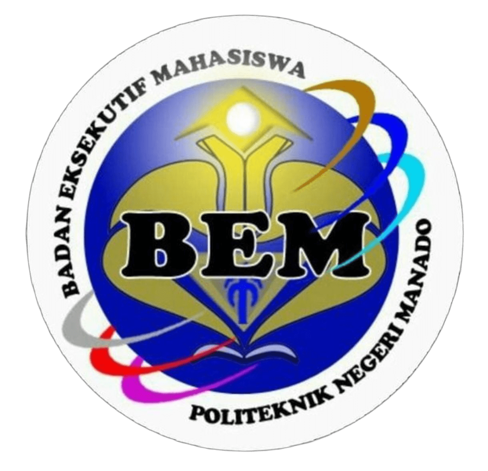
Badan Eksekutif Mahasiswa (BEM) Politeknik Negeri Manado merupakan organisasi mahasiswa tingkat institusi yang berfungsi sebagai lembaga eksekutif dan pusat koordinasi kegiatan kemahasiswaan di Polimdo. BEM hadir sebagai wadah aspirasi, pengembangan karakter, dan penggerak kreativitas mahasiswa dalam berbagai bidang.
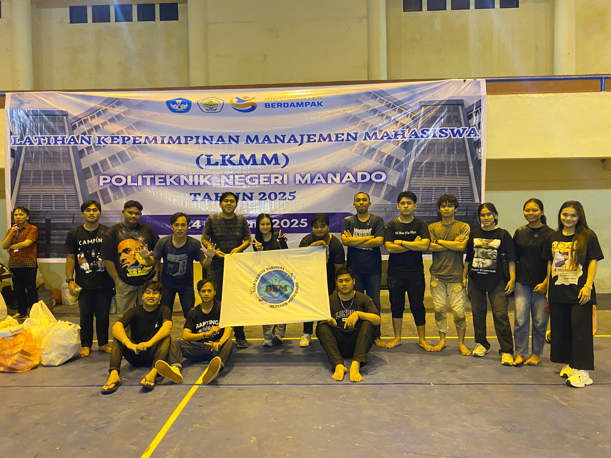
Mewujudkan Badan Eksekutif Mahasiswa Politeknik Negeri Manado sebagai lembaga eksekutif yang unggul dalam intelektualitas, aktif dalam pergerakan yang progresif, serta memiliki kepedulian tinggi dalam mengawal setiap aspirasi guna menjawab kebutuhan nyata seluruh mahasiswa
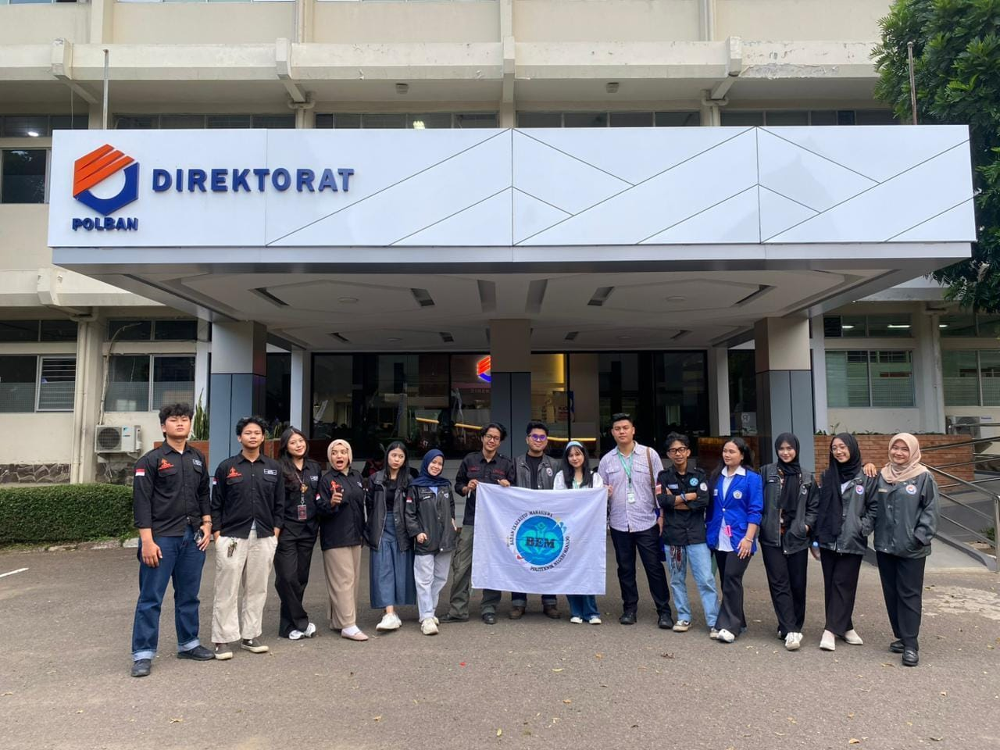
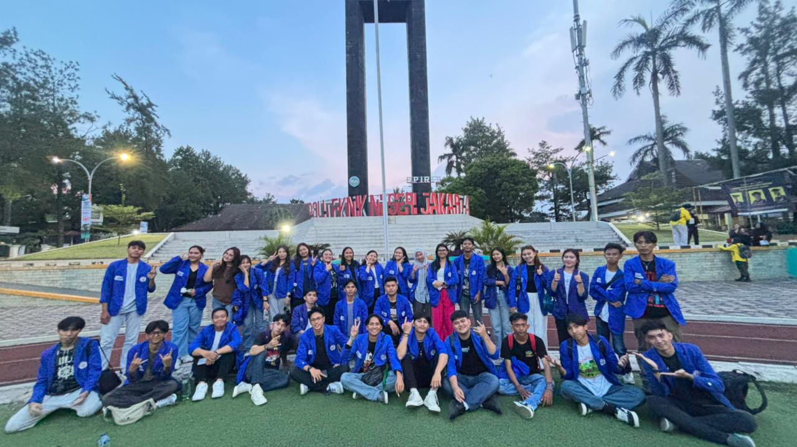
Informasi profil dan identitas resmi BEM Polimdo.
Koleksi foto dan video kegiatan terbaru.
Ringkasan kegiatan dan proyek organisasi.

Wadah menyampaikan keluhan dan masukan.
Informasi event dan agenda terbaru.
Akses ke laporan dan aktivitas BEM.
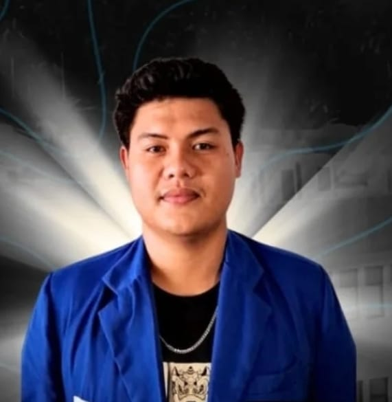
Presiden Mahasiswa adalah pemimpin tertinggi BEM yang bertanggung jawab terhadap seluruh arah kebijakan organisasi. Presma menjadi representasi resmi mahasiswa di dalam dan luar kampus serta memastikan seluruh kementerian bekerja sesuai visi kabinet. Ia memimpin rapat besar, membuat kebijakan strategis, dan menjadi juru bicara utama BEM.
Wapresma membantu Presma dalam menjalankan tugas-tugas kepemimpinan. Ia memastikan koordinasi antar kementerian berjalan lancar, mengawasi pelaksanaan program, serta menggantikan Presma jika berhalangan. Posisi ini merupakan motor penggerak internal agar BEM tetap solid dan efektif.
Sekretaris Kabinet bertanggung jawab mengatur administrasi organisasi. Tugasnya meliputi pencatatan notulen rapat, pengelolaan surat-menyurat, penyimpanan dokumen penting, serta memastikan setiap kegiatan memiliki arsip resmi. Sekretaris juga menjaga alur komunikasi antar departemen.
Membantu Sekretaris Kabinet dalam seluruh pekerjaan administrasi. Asisten sekretaris memastikan dokumen tersusun rapi, membantu penyusunan laporan, dan ikut mengelola kebutuhan administratif setiap program kerja.
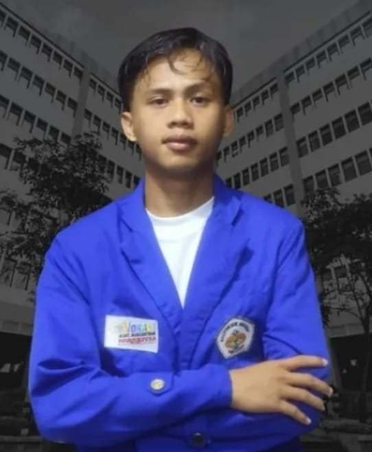
Kemenko I merupakan bagian dari Susunan Kabinet BEM 2025 yang bertugas mengoordinasikan kementerian di bidang Kemenlu, Kemendagri, Kominfo, dan Kemenrispen. Kemenko I berfokus pada pengelolaan isu-isu politik kampus, penanganan advokasi mahasiswa, pengaturan strategi diplomasi dan hubungan antar ormawa, serta menjaga stabilitas komunikasi internal dan eksternal di lingkungan kampus.
Kemenko II – Sosial dan Perekonomian Mahasiswa. Dalam Susunan Kabinet BEM 2025, Kemenko II membawahi tiga kementerian yaitu Kemenkeu, Kemenkeswa, dan Kemenkora. Kemenko II memiliki fokus utama pada peningkatan kesejahteraan mahasiswa, pengembangan kegiatan sosial, pengelolaan keuangan organisasi, serta pembinaan kegiatan olahraga, kesehatan, dan ekonomi kreatif mahasiswa.
Kominfo (Kementerian Komunikasi & Informasi) yang dipimpin oleh bertugas mengelola media sosial dan publikasi BEM. Kominfo juga menangani desain poster, konten, serta branding visual, menjaga komunikasi publik organisasi, dan menyebarkan seluruh informasi mengenai kegiatan dan kebijakan BEM.
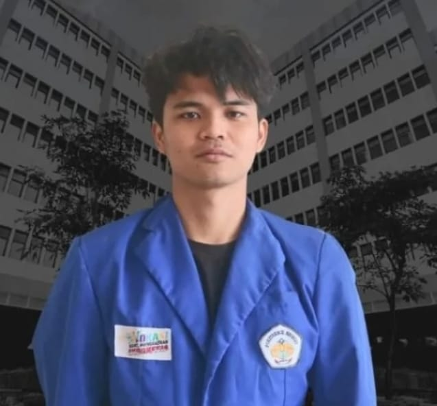
Kemenrispen dipimpin oleh Wahyu Wahab dengan dukungan anggota Dani Mahendra dan Afung Ridel. Kementerian ini bertanggung jawab untuk melakukan riset terkait kebutuhan mahasiswa, menganalisis hasil kegiatan, serta mengembangkan inovasi program kerja. Anggota berperan melakukan pengumpulan data di lapangan, menyusun laporan analisis, membantu penyusunan rekomendasi kebijakan, serta merancang solusi kreatif yang dituangkan dalam bentuk program kerja yang dapat diimplementasikan oleh BEM. Mereka turut mendukung evaluasi kinerja BEM sepanjang periode berjalan.
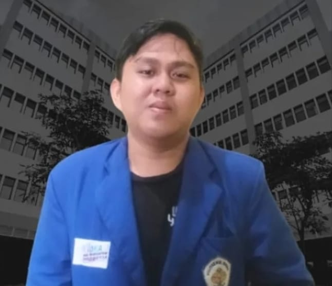
Dipimpin oleh Javier Kalentang, Kemendagri mengatur hubungan internal BEM serta hubungan antar ormawa di tingkat fakultas. Anggota kementerian, yaitu Andi Prasetya, membantu mengelola administrasi internal, memfasilitasi koordinasi antar departemen, serta menjaga kedisiplinan organisasi dalam setiap kegiatan. Anggota juga berperan dalam memastikan keteraturan dokumen internal, memonitor jalannya program lintas departemen, serta membantu menjaga stabilitas internal organisasi.
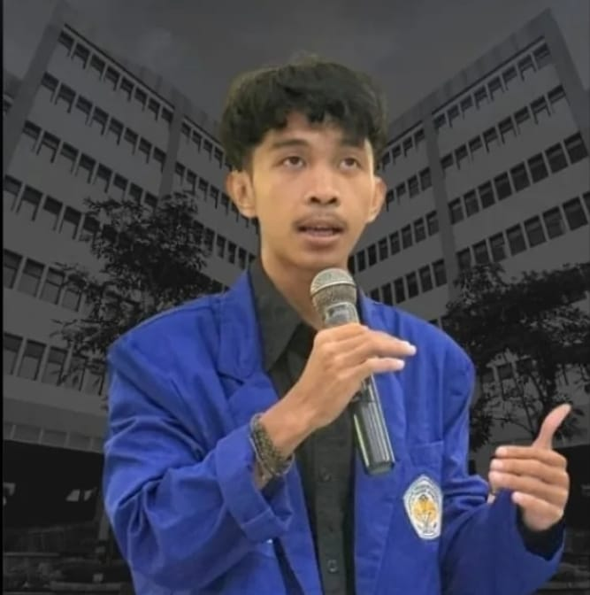
Kemenlu yang dipimpin oleh Ariyanto Magenda dengan anggota Axel Wala dan Kirey Lababu memiliki tanggung jawab dalam membangun relasi eksternal BEM, seperti hubungan dengan organisasi mahasiswa lain, lembaga eksternal kampus, serta pihak-pihak yang relevan dengan kegiatan kemahasiswaan. Para anggotanya berperan aktif dalam menjalin komunikasi dengan mitra, mengatur jadwal kerja sama, menyusun dokumentasi kerja sama, serta menjadi perwakilan BEM dalam kegiatan luar yang melibatkan pihak eksternal.
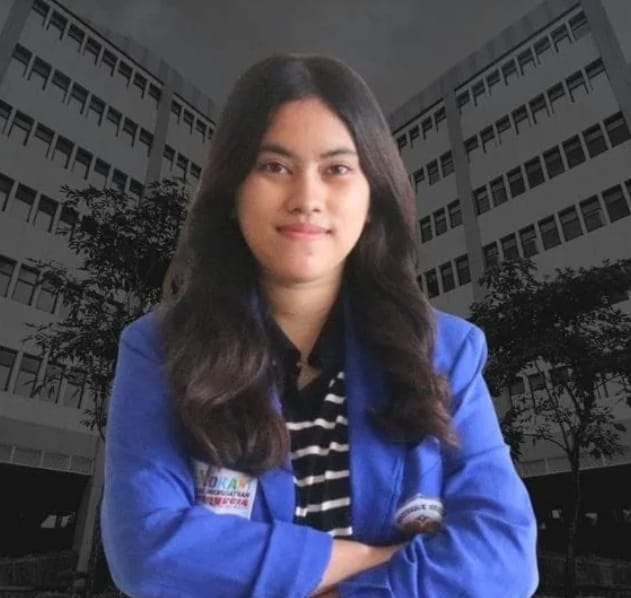
Dipimpin oleh Joanda Kandouw, Kemenkeu mengelola seluruh aspek keuangan BEM. Anggota yaitu Jermias Caraen membantu melakukan pencatatan transaksi, menyusun laporan keuangan, menyiapkan anggaran kegiatan, serta memastikan dana digunakan secara efektif dan sesuai dengan prosedur. Anggota juga memastikan laporan keuangan transparan, akurat, dan dapat dipertanggungjawabkan pada akhir periode.
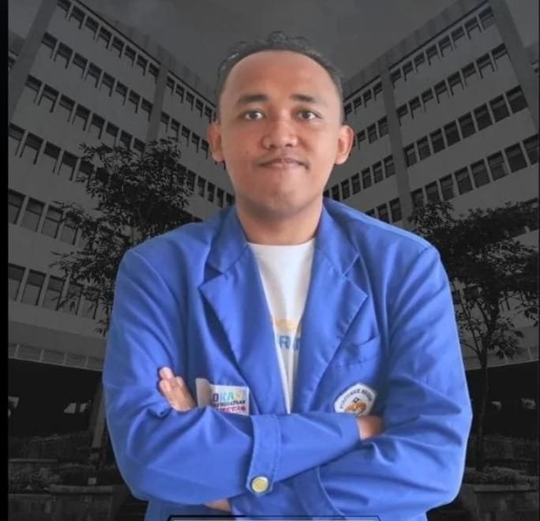
Di bawah kepemimpinan Faisal Tangahu, Kemenkeswa berfokus pada peningkatan kesejahteraan mahasiswa melalui kegiatan sosial dan program bantuan. Anggota kementerian, yaitu Claudisa Rempas dan Irene Samusamu, terlibat dalam pendataan kebutuhan mahasiswa, pengelolaan program bantuan, penyelenggaraan kegiatan sosial, serta penyusunan kampanye yang berkaitan dengan isu kesejahteraan. Mereka turut terjun langsung dalam kegiatan sosial dan memastikan setiap program memberi dampak nyata bagi mahasiswa.
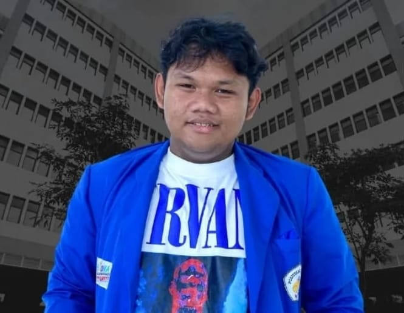
Dipimpin oleh Clay Karendehi dengan anggota Refaldi Muaya dan Marven Maga, Kemenkora bertanggung jawab atas penyelenggaraan kegiatan olahraga dan rekreasi di kampus. Para anggotanya berperan dalam pengelolaan event olahraga, koordinasi dengan UKM olahraga, penyusunan jadwal kegiatan, serta memastikan peralatan dan kebutuhan teknis setiap kegiatan terpenuhi. Mereka membantu membangun semangat sportivitas, kebersamaan, dan solidaritas mahasiswa melalui berbagai kegiatan fisik di lingkungan kampus.
Layanan resmi untuk menyampaikan aspirasi, keluhan, dan saran mahasiswa kepada BEM.
Pos Pengaduan Mahasiswa adalah layanan yang disediakan BEM untuk menampung aspirasi, kritik, saran, maupun laporan yang berkaitan dengan kegiatan akademik maupun non-akademik. Setiap pengaduan akan diteruskan kepada departemen terkait untuk ditindaklanjuti.
Kirim PengaduanBEM membuka ruang bagi setiap mahasiswa untuk menyampaikan keluhan, kritik, dan saran yang membangun demi terciptanya lingkungan kampus yang lebih baik dan lebih responsif terhadap kebutuhan mahasiswa.
Ajukan AspirasiJl. Raya Politeknik, Buha, Kec. Mapanget
Kota Manado, Sulawesi Utara
08986754091 (PRESMA BEM)
0895802552099 (KEMENLU BEM)